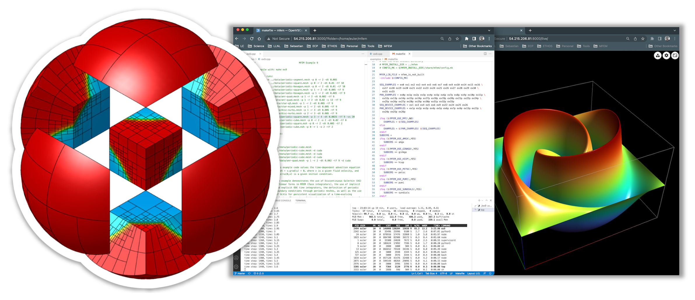

MFEM Tutorial on AWS

Welcome to the MFEM tutorial, part of the RADIUSS Tutorial Series in collaboration with AWS.
MFEM is a modular parallel C++ library for finite element methods developed at CASC, LLNL with the help of the MFEM community.
The pages below provide a self-paced overview of MFEM and its use for scalable finite element discretizations and application development. You can follow along in your own Amazon EC2 instance or in a Local Docker Container . No previous experience is necessary.
We recommend that you start with the Getting Started and Finite Element Basics lessons, and then, depending on your interests, pick some of the next 3 lessons: Tour of MFEM Examples, Meshing and Visualization, and Solvers and Scalability. The tutorial concludes with additional suggestions in the Further Steps page.
Getting Started
This is the first page you should visit to setup your tutorial environment. You will learn about:
- Setting up Visual Studio Code editor and terminal
- Setting up GLVis for visualization
- Testing the setup with a simple MFEM example
Finite Element Basics
Once you have the tutorial environment working, visit this page to learn about the basics of the finite element method and its implementation in MFEM. The lesson covers:
- Annotated Example 1
- Serial and parallel runs
- GLVis keys/web interface
Tour of MFEM Examples
This is an optional lesson where you can learn about MFEM's main features: support for high-order methods, adaptive mesh refinement, $H^1$, $H(curl)$, $H(div)$ and $L^2$ discretizations, through several of the examples included with the library:
- High-order methods for the full de Rham complex (Examples 1, 2, 3, 4)
- Discontinuous Galerkin (Example 9)
- Nonlinear elasticity (Example 10)
- Adaptive mesh refinement (Example 15)
- Complex methods, PML (Examples 22, 25)
Meshing and Visualization
This is an optional lesson that illustrates MFEM's support for external mesh generators, internal meshing tools, and external visualization tools. You will learn about:
- Importing meshes from Gmsh and Cubit
- MFEM's meshing tools: Mesh Explorer, Mesh Optimizer, and Shaper
- Visualizing results in VisIt and ParaView
Solvers and Scalability
This is an optional lesson that showcases MFEM's parallel scalability and support for efficient solvers and preconditioners. The lesson covers:
- Scalable algebraic multigrid preconditioners from hypre (Examples 1, 2, 3, 4)
- MFEM's native Multigrid solver (Example 26)
- Low-order refined methods (Solvers and Transfer miniapps)
- Additional solver integrations via PETSc, SuperLU, and STRUMPACK
Further Steps
This is the final lesson with further activities, including:
- Explore additional examples and miniapps
- Write your own simple simulation starting from one of the MFEM examples
- Learn about integrations with other libraries and MFEM's GPU capabilities
- Visit the MFEM website, watch MFEM-related videos and seminar talks
- Join the MFEM organization on GitHub to contribute to the project